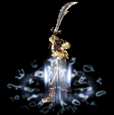

技能资料
共 61 项技能, 按职业分类
战士13

基本剑术
很久以前，有一位武艺高强的战士创建了这门剑法，百姓们使用此剑术抵抗怪物。基本剑术学起来容…

攻杀剑术
攻杀剑术也属于入门剑术，是修炼外力，内功的高级武功。基本剑术到了一定境界，就会运气自然，…

刺杀剑术
经过长时间的修炼，剑术和内功都达到一定境界，就可按照自己的意愿使剑发出剑光。使用刺杀剑术…
半月弯刀
与刺杀剑术一样，是可以发出剑光的高级功夫。但是，与刺杀剑术不同，半月弯刀可以同时攻击邻近…
野蛮冲撞
剑术和步法相结合的奇特功夫，力如泰山，向敌人箭一般地跑去。给敌人的打击不算很大，但是用强…
烈火剑法
烈火剑法使用内功吸收法术将体内火热的气运聚集到丹田，再注入到武器中攻击敌人，其破坏力非常…
翔空剑法
人飞向空中，从半空落下攻击敌人的剑术，由于盘旋飞上空中的气势就像升天的龙王，所以起名叫做…

莲月剑法
莲月剑法，动作灵活猛烈，是最高剑法之一。一挥剑就会发出强烈剑光，剑光大波大起，根本不给对…

十方斩
十方斩，以剑身的旋转带出一个环绕的圆型气场，气场边缘的淡蓝色剑气犹如剑刃本身般利不可挡。…

乾坤大挪移
乾坤大挪移其实是一种把身法发挥到极致的技能。使用者以自身极高的速度冲向对方所在的位置，其…

铁布衫
铁布衫是气功横练的一种。通过使贯注在经脉中的内家真气高度集中同时高速流动，让原本的血肉之…

斗转星移
斗转星移，能够使用斗转星移的战士本身已是控制气场的高手。当他的身体与周围的空气融成一体时…

破血狂杀
破血狂杀，从实质来看，是铁布衫完全相反的一种形式。当一个人的意念完全用于破敌时，他将不再…
法师26

火球术
用咒语将内功转换为火球射向对方。修炼等级越高，杀伤力也越强。 - 1等级 : 7级开始可…

霹雳掌
是将体内的魔法转换为电击气运，集中在掌心，向外射放的最简单的电击系列魔法。虽然威力不是很…

冰月神掌
利用法术将体内的魔法转换为冰气射放出来。虽然冰系列魔法主要对没有耐性的敌人有较大效果，但…

风掌
风系的点魔法,可以吹开等级比低很多的怪。很多怪物都怕风的,这招很适用哦 - 1等级 : …

抗拒火环
抗拒火环引起火焰旋风，将身边的敌人驱逐开。被敌人包围时，可以使用此魔法。但是一定要注意，…

诱惑之光
诱惑之光给敌人强烈的电击冲击，攻击的不是敌人的肉体，而是灵魂，是非常可怕的魔法。中了此法…

瞬息移动
瞬息移动使用的是最黑暗最神奇领域的魔法，贯通时空的法术。可以瞬间移动到村庄附近，但是修炼…

大火球
大火球是火球术的更高境界，将相当量的火气凝聚在一点喷发出来。这时候的火焰可以熔化钢铁。 …

雷电术
雷电术通过把微弱的电力射向天空，在自己所设定的地方进行雷劈。雷劈威力巨大，给敌人的打击很…

冰月震天
冰月震天是冰月神掌的更高境界，喷发出大冰球，击中的敌人会受到严重的冰寒攻击。另外，与冰月…

击风
风系的点魔法,可以吹开等级比低很多的怪。很多怪物都怕风的,这招很适用哦 - 1等级 : …

地狱火
地狱火直线发射强烈火焰。火焰长度不是非常长，但是可以同时攻击排成一队的多数敌人。破坏力不…

疾光电影
疾光电影可以放射出贯通力强的闪电，对排成一对的所有敌人同时进行攻击。使用方法与地狱火相似…

冰沙掌
冰沙掌直线喷射出寒气，攻击敌人。强烈的冰气不仅打伤敌人的肉体，还使敌人动作迟钝。据说此魔…

火墙
传说此魔法是一位怀恨去世的天才法师所创建，在特定地方点燃不灭之火。点燃的火花就跟法师心中…

圣言术
不知名的邪恶魔魂附在具有奇异魔力的怪物身上，支配着这些死者系列怪物。但是，这些死者系列的…

异形换位
异形换位可在一定空间内按照自己的意愿到处移动。经过幻影术的法师过了超越空间的境界，可支配…

魔法盾
将纯粹的魔力变换为物理上的力量，在自己周围形成保护膜，又名叫做'魔帐术'，可以吸收外部来…

爆裂火焰
瞬间爆发出高温火焰，法师所发出来的内功迅速变成火焰造成大爆发。以攻击地点位中心，上下左右…

地狱雷光
瞬间发生电力，法师发出的内功迅速转变为雷电造成大爆发。以攻击地点位中心，上下左右，两条斜…

冰咆哮
引起冰雪暴风攻击敌人。使用此魔法，就会引起风雪，无数的冰块形成旋风。冰块旋转速度非常快，…

龙卷风
龙卷风可在指定的地方引起旋风(3*3)攻击敌人。 达到法师最高境界，就可利用魔法引起强大…

魄冰刺
魄冰刺其实是冰沙掌的高阶魔法。当法师以自身自然力凝聚成一条冰柱并释放时，冰沙掌就诞生了；…

怒神霹雳
怒神霹雳，消耗自身大量的MP，创造出一个雷系爆炸点。一旦爆炸点击中目标，会以迅雷不及掩耳…

焰天火雨
焰天火雨看似是无数大火球的乱舞，但真正目睹后会为其强大的伤害力而咋舌。由于每个火球都集聚…

凝血离魂
凝血离魂，这个一度被列为禁忌的魔法拥有太多的牺牲者。为了追求极限的自然力量，一族法师支流…
道士22

治愈术
道士的具代表性的魔法。治愈术可以恢复自己或他人的体力。 - 1等级 : 7级开始可以修炼…

精神力战法
虽然道士具有很多神秘的魔法，但是基本的攻击离不开剑。精神力战法含道士武功的精华，提高命中…

施毒术
道士不仅会制作草药，还可制毒。将道士的这种能力升华为武功，就是施毒术。目前只有两种毒药，…

灵魂火符
将具有爆发力的护身符发向敌人的魔法。虽然攻击力没有法师强大，但可在远距离攻击或引诱敌人，…

月魂断玉
古人在与邪恶的怪物进行战斗过程中创建的魔法。将体内的内功凝聚起来向外放射，威力虽不大，但…

召唤骷髅
利用强大的精神力，召唤那些死去的灵魂。被召唤的灵魂是骷髅的形状，帮助道士一起抵抗怪物。被…

隐身术
一时隐藏自己，躲避怪物的独特技术，被很多怪物包围时，非常有用。但是只能对那些有视觉，嗅觉…

幽灵盾
利用体内的真气，防御外来的攻击。远距离驱使护身符，除了自己以外还能提高周围其他人的魔法防…

集体隐身术
是隐身术的更高境界，除了自己以外还可隐藏别人。将护身符扔掷在某目标地，会以此地方为中心一…

月魂灵波
月魂断玉更高境界的魔法。凝聚体内的真气，放射更具破坏力的魔法。与月魂断玉一样，对死者系列…

神圣战甲术
将大自然的真气吸收到任的体内，在一定时间内提高防御力。集体打猎时，给进行格斗的战士使用此…

困魔咒
使用护身符，在一定范围内困住敌人。被限制于咒语中的怪物与外界隔离开，只能在圈内徘徊。但是…

空拳刀法
身无寸铁的道士可以使用空拳刀法突破怪物的包围。旋转全身，踢开敌人，使用体内的真气推开周围…

召唤神兽
通过强大的精神力打通神界之路，召唤神兽。被召唤的神兽会区分是非，嘴里喷出的火花可以烧毁邪…

群体治愈术
同时治愈多数人，但也正因如此消耗的真气也多，不能经常使用。遇到紧急情况，为了拯救自己的同…
超强召唤骷髅
长时间苦心修炼的道士可以召唤更多守护神。使用超强召唤骷髅，可在已经召唤骷髅和神兽的情况下…

猛虎强势
猛虎强势通过给对方赋予强有力的战斗精神和力量，按照设定的攻击模式，以道士所在的位置为中心…

回生术
道士们通过长时间的修炼，对生命有了更深的理解，大慈大悲。到达这种境界的道士就可以修炼起死…

云寂术
云寂术，激发人体内的真性，回复赤子般无暇的心灵。当外界的任何干扰只如过眼云烟一般时，人的…

移花接玉
移花接玉，无数人始终坚信“存在必合理”的道理。当道士的破坏力被认定不再重要的时刻，一位前…

妙影无踪
妙影无踪，道家与世无争，但伤害不可避免地降临时，如何能既保全自己又不祸及他人？妙影无踪是…

阴阳法环
阴阳法环，人体为阴阳两气的调和，如何化阴阳两气为两个极端保护肉身成为历代道家真人的钻研目…